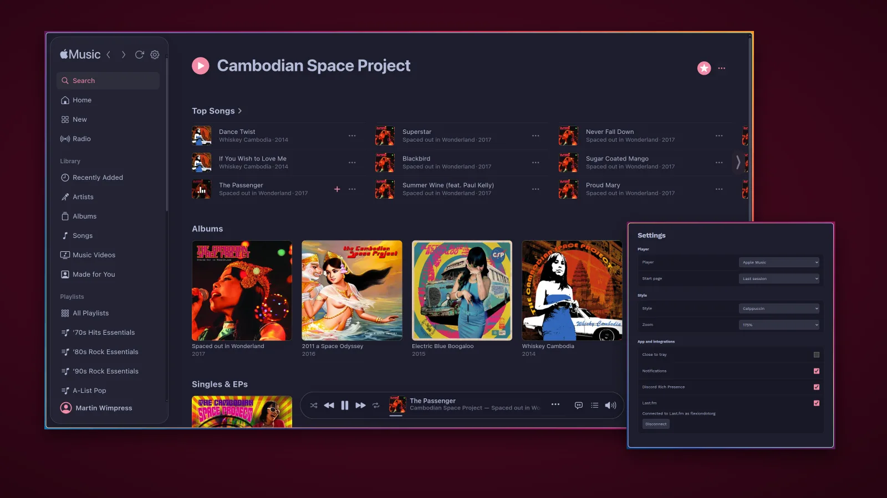
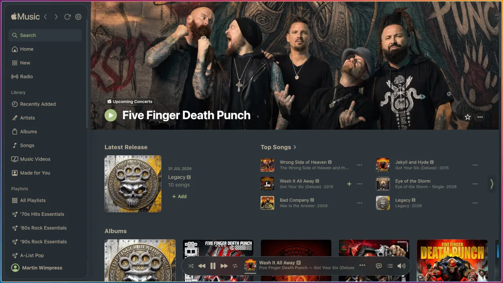
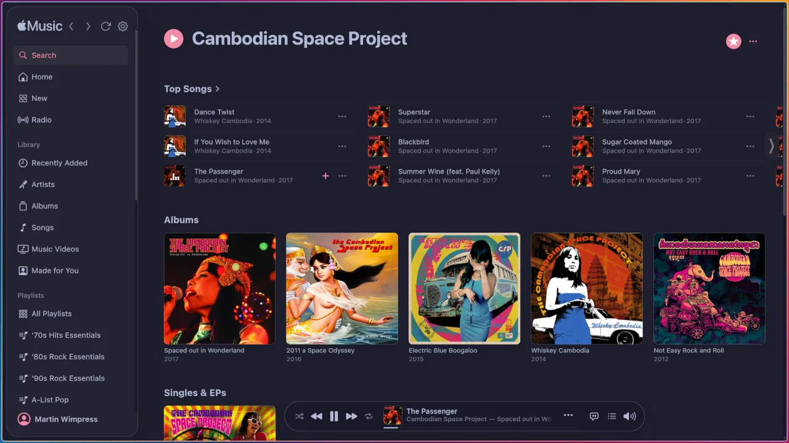
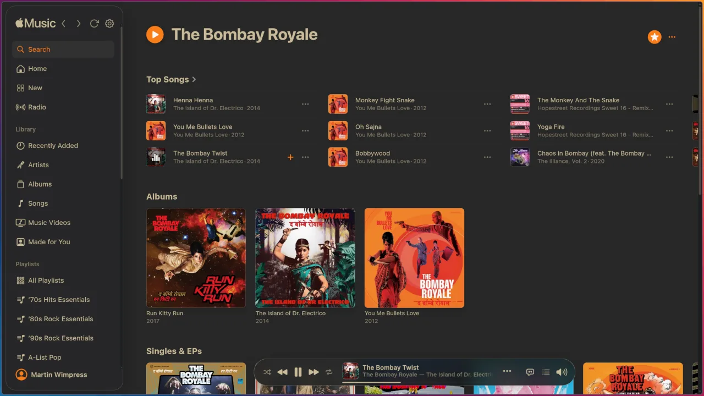
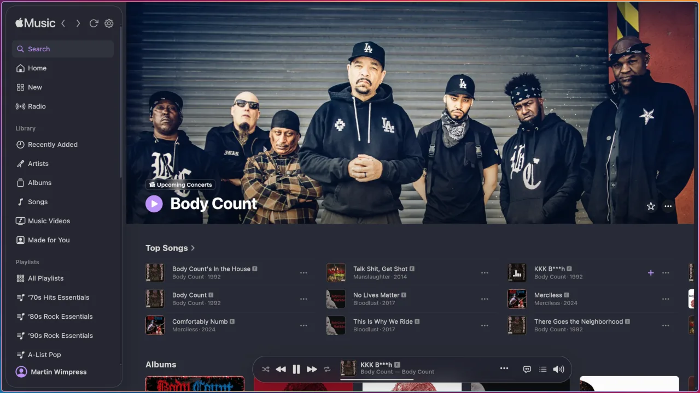

Open source Apple Music client
Apple Music, as a proper desktop citizen
Untouched audio, native media controls and eight themes on Linux, macOS and Windows. No frippery, just quality.

Features
Wired in, not bolted on
Sidra plugs into each platform's native media subsystem, so media keys, Now Playing and notifications work the way the desktop expects.
Untouched audio
Apple's own audio path, nothing added. Lossless on macOS and Windows via CastLabs EVS production VMP signing.
Eight bundled themes
Palettes from Catppuccin to Tokyo Night, plus a live-reloading custom colour theme of your own.
Last.fm scrobbling
Opt-in, with browser approval or a custom scrobble endpoint.
Discord Rich Presence
Show what you are listening to, including Vesktop Flatpak on Linux.
Desktop notifications
Tracks and radio songs, with Play/Pause, Previous and Next where the platform supports actions.
32 languages
Localised storefront and interface.
Back, Forward and Reload
Injected into both Apple Music and Apple Music Classical.
Controller navigation
Use a standard controller to move through and select items in both services.
Fast playlist start
Large library playlists start in one to three seconds once opened before, instead of 17 or more.
Scroll to change volume
Point at the player bar volume control and scroll. 5% a notch.
Apple Music Classical
Switch at runtime through Player in Settings or the tray, with its own choice of start page.
Auto-update
AppImage and the Windows installer update silently and prompt to restart. Other formats show a notification linking to their repository.
Linux
- Widevine DRM via CastLabs Electron
- Wayland and X11 support
- Bi-directional MPRIS (
org.mpris.MediaPlayer2.sidra) over D-Bus, with seeking, queue-preserving Stop, media URL playback and radio song metadata
macOS
- Full Widevine DRM with EVS production VMP signing
- Now Playing widget, Dock menu with playback controls, and Dock progress bar
- App menu (Cmd+Q, About) and native share sheet for the current track
Windows
- Full Widevine DRM with EVS production VMP signing
- GSMTC media flyout, taskbar thumbnail toolbar (play/pause, next, previous)
- Taskbar overlay icon and progress bar showing playback state and position
Application indicator
- Now Playing: track, artist, album, artwork
- Playback controls, volume, and mute
- Start page and last session restore, style switcher, zoom control
- Close to tray, opt-in: closing the window keeps Sidra running, with Hide and Show entries
- Share current track (macOS), auto-update status
Open Settings with the gear button beside Back, Forward and Reload, or press Ctrl+, on Linux or Windows and Cmd+, on macOS. The resizable window holds player, start page, style, zoom, close-to-tray, notification, Discord and Last.fm preferences, and changes save immediately. See the Home and Controls wiki page for paths and shortcuts.
Theming
Eight themes, or your own
Choose Style in Settings. Your chosen theme applies to Apple Music, Apple Music Classical and Settings. Pick a theme below and this part of the page takes on its palette, in the dark or light scheme that matches your page theme.




Nord, Rosé Pine, Solarized and Tokyo Night are bundled too. For your own colours, place a custom-theme.json file in Sidra's user data directory to add a live-reloading Custom Theme choice. The Custom Themes wiki page has the file paths, colour keys and setup steps.
Why Sidra?
Nothing between the apple and the glass
I wanted an Apple Music client that just worked, so I made Sidra. It wraps music.apple.com directly: Apple's audio pipeline, Apple's auth, Apple's UI. Audio flows untouched through Chromium's media stack to the OS.
- Apple Musicmusic.apple.com, Widevine DRM
- Chromium media stackDecode and output, nothing added
- Your OS audioPipeWire, PulseAudio, CoreAudio, WASAPI
AudioContext, no DSP, no resampling of its own. Chromium and the OS can still resample.Sidra is the Spanish word for the traditional dry cider of Asturias in northern Spain: poured from height, unfiltered, drunk before it goes flat. No additives, no artifice, nothing between the apple and the glass.
Install
Pick your platform
Each repository is signed and keeps Sidra up to date.
-
 Linux
Debian and Ubuntu
apt.wimpys.world
Linux
Debian and Ubuntu
apt.wimpys.world
-
 Linux
Fedora and openSUSE
rpm.wimpys.world
Linux
Fedora and openSUSE
rpm.wimpys.world
-
 Linux
Arch Linux
pkg.wimpys.world
Linux
Arch Linux
pkg.wimpys.world
-
 Linux
Flatpak
flatpak.wimpys.world
Linux
Flatpak
flatpak.wimpys.world
-
 macOS
Homebrew
brew.wimpys.world
macOS
Homebrew
brew.wimpys.world
-
 Windows
Scoop
scoop.wimpys.world
Windows
Scoop
scoop.wimpys.world
-
 Nix
Nix and NixOS
nix.wimpys.world
Nix
Nix and NixOS
nix.wimpys.world
Updates itself
These builds update themselves.
The Windows installer is unsigned. When SmartScreen warns you, select More info, then Run anyway. Without FUSE, run the AppImage with --appimage-extract-and-run.
Sponsor
Help remove the install friction
Sidra's macOS and Windows releases are currently unsigned, requiring Gatekeeper and SmartScreen workarounds at install time. Sponsoring the project goes directly towards code-signing certificates to remove that friction for every user.
Press and community
Around Sidra
-
Linux Matters, Episode 79
I am a presenter on Linux Matters and discussed Sidra's origins in this episode.
Pouring out the Sidra -
Linux Magazin Online
Covers Sidra 1.0 and includes an interview with me, in German.
Sidra 1.0 on the Linux desktop -
MPRIS MiniPlayer
Christian Lauinger asked for a mini player in #125, then built one: a small GTK4 and libadwaita window that controls any MPRIS player on Linux. Thank you, Christian.
MPRIS MiniPlayer on GitHub -
Noctalia Sidra template
Noctalia's community template adds a live-reloading Custom Theme choice under Style in Settings, so Sidra follows your desktop colours.
Sidra community template